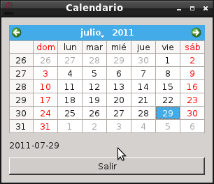

Tutorial de PyQt (calendario). Parte 4
Posted on Mon 04 July 2011 in Tutorial de Python y PyQt • 2 min read
Continuando con los artículos sobre PyQt, ahora explicare como usar un calendario y capturar la selección de una fecha dada, la fecha seleccionada se muestra en una etiqueta de forma dinámica y al final se agrega un botón de salir.
Basicamente se usará QtGui.QCalendarWidget usando con una cuadricula con el método setGridVisible que tiene dos opciones True o False.
A continuación el código del programa:
#!/usr/bin/env python
# -*- coding: utf-8 -*-
#Se importa el modulo sys
import sys
#De PyQt4 importar QtGui y QtCore
from PyQt4 import QtGui
from PyQt4 import QtCore
class App(QtGui.QWidget):
def __init__(self, parent=None):
QtGui.QWidget.__init__(self, parent)
#Se define el tamano de la ventana
self.setGeometry(400, 400, 250, 150)
#Se le coloca un titulo a la ventana y se asocia un icono.
self.setWindowTitle('Calendario')
self.setWindowIcon(QtGui.QIcon('./openlogo-50.png'))
#Define el calendario en una ventana
self.cal = QtGui.QCalendarWidget(self)
#Se define una cuadricula al calendario
self.cal.setGridVisible(True)
#Se define una etiqueta donde se mostrara
#La fecha seleccionada
self.etiqueta = QtGui.QLabel(self)
#Se captura la fecha y se muestra en la etiqueta
self.fecha = self.cal.selectedDate()
self.etiqueta.setText(str(self.fecha.toPyDate()))
#Se define el boton para salir
quit = QtGui.QPushButton('Salir', self)
#Se define como empaquetar los widgets.
#En este caso se usa grilla.
#Se crea la instancia
grid = QtGui.QGridLayout()
grid.setSpacing(10)
grid.addWidget(self.cal, 1, 0)
grid.addWidget(self.etiqueta, 2, 0)
grid.addWidget(quit,3,0)
#Se define el layout pasando la grilla
self.setLayout(grid)
self.connect(quit, QtCore.SIGNAL('clicked()'),QtGui.qApp, QtCore.SLOT('quit()'))
self.connect(self.cal, QtCore.SIGNAL('selectionChanged()'),
self.mostrarFecha)
def mostrarFecha(self):
self.fecha = self.cal.selectedDate()
self.etiqueta.setText(str(self.fecha.toPyDate()))
#Se ejecuta el programa principal
if __name__ == "__main__":
#Se instancia la clase QApplication
app = QtGui.QApplication(sys.argv)
#Se instancia el objeto QuitButton
qb = App()
#Se muestra la aplicacion
qb.show()
#Se sale de la aplicacion
sys.exit(app.exec_())
La figura muestra el programa en funcionamiento:

===
¡Haz tu donativo! Si te gustó el artículo puedes realizar un donativo con Bitcoin (BTC) usando la billetera digital de tu preferencia a la siguiente dirección: 17MtNybhdkA9GV3UNS6BTwPcuhjXoPrSzV
O Escaneando el código QR desde billetera: